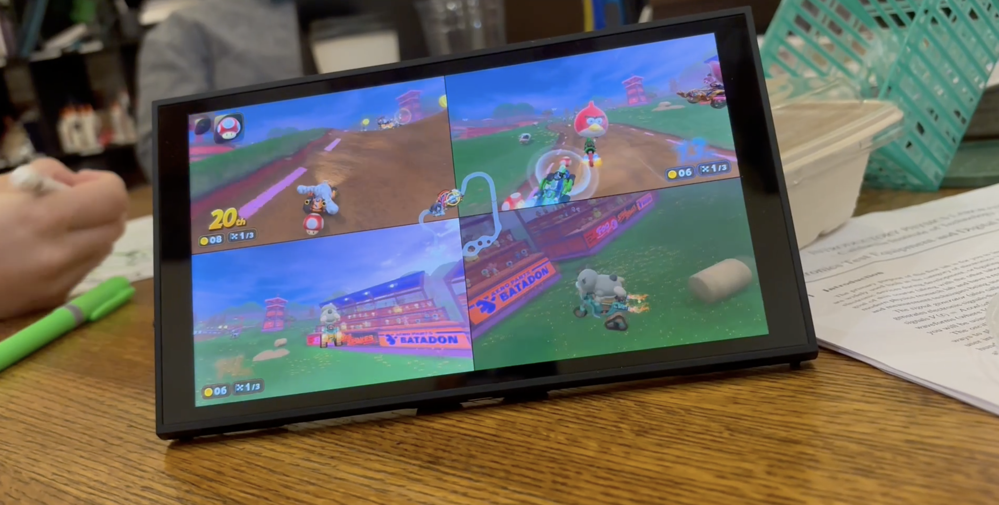

Исследователь безопасности Сэмми Хадхамид, известный под ником pepsipu, опубликовал ns2jb — первый программный джейлбрейк Nintendo Switch 2 для текущей прошивки 23.0.1. Главная деталь: основную работу по поиску уязвимости и написанию эксплойта вёл ИИ-агент OpenAI Codex. Об этом сам исследователь написал в блоге 18 октября, 22-го новость подхватила пресса, включая The Verge.
Чтобы агент работал полусамостоятельно, моддер собрал стенд: два устройства JetKVM передают на консоли нажатия кнопок по USB и считывают видеосигнал по HDMI, а Bluetooth-привод для выключателя нажимает кнопку питания, когда приставка зависает. Codex сначала пошёл классическим для консолей путём — через браузерный движок WebKit с помощью фейковой точки доступа Wi-Fi — и получил там перехват управления выполнением, но упёрся в современные защиты: память, недоступную для чтения, подписи указателей и проверки вызовов. Тогда агент переключился на SmileBASIC 4 — старую обучающую игру с интерпретатором BASIC примерно за 25 долларов, которую уже взламывали во времена 3DS, — и нашёл в нём 32-битное переполнение при удалении элементов массива. На сам джейлбрейк ушло около двух недель, а модифицированную Mario Kart World, по словам автора, ИИ собрал за один день «на вайбе» — эту фразу он сопроводил пометкой, что знаменитый промпт «вз ломай Switch 2, не делай ошибок» был шуткой.
ns2jb позволяет запускать произвольный нативный код на уровне системных модулей — правда, только в пользовательском пространстве, не в ядре. Это домашний софт, моды на игры, копирование сохранений и доступ к периферии консоли. Джейлбрейк привязанный: при каждом включении его нужно заново запускать через SmileBASIC. В качестве демонстрации агент добавил в Mario Kart World играбельных Питера Гриффина, красную птицу из Angry Birds, Cinnamoroll и Стива из Minecraft. Другой моддер при этом отметил, что игра не строго обязательна — значит, путь могут упростить.
После нашумевших атак с ИИ-агентами, от автономного взлома на баг-баунти до критических дыр в PHP, это первое публичное вторжение ИИ в хорошо защищённую коммерческую систему — и на публике агент выступил в роли моддера, а не злоумышленника. Nintendo официально не комментировала случившееся, а сообщество пока спорит, насколько джейлбрейк практичен: для обхода защиты онлайн-функций его возможностей может не хватить. Для владельцев консолей главное практическое следствие — обновлять прошивку теперь стало важнее, а продажи SmileBASIC 4, судя по всему, резко выросли.